전자캐드기능사 (2014-04-06 기출문제)
1과목: 전기전자공학(대략구분)
1. 멀티바이브레이터의 비안정, 단안정, 쌍안정이라고 말하는 것은 무엇으로 결정하는가?
- 전원의 크기
- 바이어스 전압의 크기
- 저항의 크기
- 결합회로의 구성
(정답률: 78%)

2. 정현파의 파고율은 얼마인가?
- √2
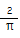
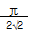
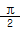
(정답률: 61%)
3. 다음 사이리스터 중 단방향성 소자는?
- TRIAC
- DIAC
- SSS
- SCR
(정답률: 68%)
4. 도체에 전압이 가해졌을 때 흐르는 전류의 크기는 가해진 전압에 비례한다는 법칙은?
- 줄의 법칙
- 옴의 법칙
- 중첩의 법칙
- 키르히호프의 전류의 법칙
(정답률: 80%)
5. 저역통과 RC 회로에서 시정수가 의미하는 것은?
- 응답의 상승 속도를 표시한다.
- 응답의 위치를 결정해 준다.
- 입력의 진폭 크기를 표시한다.
- 입력의 주기를 결정해 준다.
(정답률: 51%)
6. 다음 중 이상적인 연산증폭기의 특징으로 적합하지 않은 것은?
- 입력임피던스가 무한대이다.
- 출력임피던스가 무한대이다.
- 주파수 대역폭이 무한대이다.
- 오픈 루프 이득이 무한대이다.
(정답률: 66%)
7. 다음 중 FET에 대한 설명으로 적합하지 않은 것은?
- 입력임피던스가 매우 높다
- 전압제어형 트랜지스터이다.
- BJT 보다 잡음특성이 양호하다.
- 베이스, 드레인, 게이트 전극이 있다.
(정답률: 55%)
8. 쌍안정 멀티바이브레이터의 결합저항에 병렬로 접속한 콘덴서의 목적은?
- 증폭도를 높이기 위한 것이다.
- 스위칭 속도를 높이는 동작을 한다.
- 트랜지스터의 이미터 전위를 일정하게 한다.
- 트랜지스터의 베이스 전위를 일정하게 한다.
(정답률: 52%)
9. 고정 바이어스 회로를 사용한 트랜지스터의 β가 50이다. 안정도 S는 얼마인가?
- 49
- 50
- 51
- 52
(정답률: 69%)
10. 수정진동자의 직렬공진주파수를 f0, 병렬공진주파수를 fｓ라 할 때 수정진동자가 안정한 발진을 하기 위한 리액턴스 성분의 주파수 f의 범위는?
- f0 ＜ f ＜ fｓ
- f0 ＜ fｓ ＜ f
- fｓ ＜ f ＜ f0
- f = fｓ = f0
(정답률: 63%)
11. 다음 중 저주파 증폭기의 핵심능동소자로 알맞은 것은?
- 저항
- 콘덴서
- 코일
- 트랜지스터
(정답률: 74%)
12. 다음 회로에서 R1= Rf일 때 적합한 명칭은?
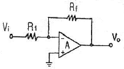
- 적분기
- 감산기
- 부호변환기
- 전류증폭기
(정답률: 68%)
13. 일반적으로 크로스 오버 일그러짐은 증폭기를 어느 급으로 사용했을 때 생기는가?
- A급 증폭기
- B급 증폭기
- C급 증폭기
- AB급 증폭기
(정답률: 74%)
14. 반송파 전력이 100〔W〕이고, 변조도 60〔%〕로 진폭변조 시키면 피변조파의 전력은 몇 〔W〕인가?
- 50〔W〕
- 100〔W〕
- 118〔W〕
- 136〔W〕
(정답률: 58%)
15. 연산증폭기에서 차동 출력을 0〔V〕가 되도록 하기 위하여 입력단자 사이에 걸어주는 것은?
- 입력 오프셋 전압
- 출력 오프셋 전압
- 입력 오프셋 전류
- 입력 오프셋 전류 드리프트
(정답률: 62%)
2과목: 전자계산기일반(대략구분)
16. “D 플립플롭은1개의 S-R 플립플롭과 1개의 ( ) 게이트로 수정할 수 있다."라는 문장에서 ( )안에 들어갈 내용으로 알맞은 것은?
- AND
- OR
- NOT
- NAND
(정답률: 69%)
17. 후입선출(LIFO) 동작을 수행하는 자료구조는?
- RAM
- ROM
- STACK
- QUEUE
(정답률: 71%)
18. 중앙처리장치(CPU)를 구성하는 주요 요소로 올바르게 짝지어진 것은?
- 연산장치와 보조기억장치
- 입.출력장치와 보조기억장치
- 연산장치와 제어장치
- 제어장치와 입.출력장치
(정답률: 70%)
19. 명령어는 전자계산기의 동작을 수행시키기 위한 비트들의 집합으로 나누어진다. 각 명령은 어떻게 구성되는가?
- 오퍼레이션코드와 실행프로그램
- 오퍼랜드와 목적프로그램
- 오퍼레이션코드와 소스코드
- 오퍼레이션코드와 오퍼랜드
(정답률: 70%)
20. 순서도를 작성하는 방법으로 틀린 것은?
- 처리순서의 방향은 아래에서 위로, 오른쪽에서 왼쪽 화살표로 처리한다.
- 논리적 타당성을 확보할 수 있도록 작성한다.
- 처리과정을 간단명료하게 표시한다.
- 순서도가 길거나 복잡할 경우 기능별로 분할한 후 연결기호를 사용하여 연결한다.
(정답률: 82%)
21. 컴퓨터 기억용량의 1k 바이트는 몇 바이트인가?
- 1000
- 1001
- 1024
- 1212
(정답률: 85%)
22. 데이터 처리 과정 및 프로그램 결과가 출력되는 전반적인 처리 과정의 흐름을 일정한 기호를 사용하여 나타낸 것을 무엇이라 하는가?
- 순서도
- 수식도
- 로그
- 분석도
(정답률: 80%)
23. 다음 스위치 회로를 불 대수로 표현하면?
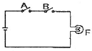
- F=A+B
- F=A·B‘
- F=A·B
- F=A‘·B
(정답률: 70%)
24. 다음 중 일반적으로 가장 적은 bit로 표현 가능한 데이터는?
- 영상 데이터
- 문자 데이터
- 숫자 데이터
- 논리 데이터
(정답률: 74%)
25. 10진수 0.375를 2진수로 변환하면?
- (0.11)2
- (0.011)2
- (0.110)2
- (0.111)2
(정답률: 59%)
26. 논리식 F=A‘BC + AB’C‘ + ABC + ABC’를 카르노맵에 의해 간소화 시킨 식은?
- F=AB + B‘C
- F=A + AC‘
- F=A‘B + BC’
- F=BC + AC‘
(정답률: 42%)
27. 상태 레지스터 중 2진 연산의 수행 결과 나타난 자리올림 또는 내림 상태를 판별하는 것은?
- Z(zero) 비트
- C(carry) 비트
- S(sign) 비트
- P(parity) 비트
(정답률: 73%)
28. 데이터 처리를 위하여 연산 능력과 제어 능력을 가지도록 하나의 칩 안에 연산 장치와 제어 장치를 집적시킨 것은?
- 컴퓨터
- 레지스터
- 누산기
- 마이크로프로세서
(정답률: 71%)
29. PCB를 가공할 때에는 부품 부착용 구멍(hole)을 만들며, 이 구멍은 부품과 배선과의 접속이 가능하도록 원형이나 사각형 등의 모양으로 부품이나 단자의 납땜 장소로 사용되는 것은?
- 랜드(land)
- 스루 홀(through hole)
- 액세스 홀(access hole)
- 트랙(track)
(정답률: 66%)
30. 인쇄회로기판이 갖추어야 할 특성과 거리가 먼 것은?
- 온도 상승에 대하여 변화가 적어야 한다.
- 납땜 시 가열 등에 의해서는 안정되어야 한다.
- 기계적 강도를 갖추고, 가공이 용이해야 한다.
- 공정 중 약물 처리에 대해 특성이 변화하여야 한다.
(정답률: 78%)
3과목: 전자제도(CAD) 이론(대략구분)
31. 회전각도와 저항값 변화율에 따라 A형, B형, C형으로 구분되며, 포텐쇼미터(potentiometer)라고 하는 소자는?
- 탄소피막 저항
- 금속피막 저항
- 가변저항
- 권선저항
(정답률: 57%)
32. A4 용지의 크기를 올바르게 나타낸 것은?
- 841x1189(mm)
- 594x841(mm)
- 420x594(mm)
- 210x297(mm)
(정답률: 84%)
33. 회로를 CAD로 작성한 후 전기적인 연결 상태를 검증하는 것은?
- ERC(Electrical Rule Check)
- LRC(Line Rule Check)
- CRC(Circuit Rule Check)
- SRC(Schematic Rule Check)
(정답률: 78%)
34. 인쇄회로기판의 고밀도화를 촉진하는 요인이 아닌 것은?
- via 홀의 소형화
- 전자회로의 단순화
- 부품의 SMT화
- 인쇄회로기판의 다층화
(정답률: 58%)
35. PCB 제조 공정에서 소정의 배선 패턴만 남기고 다른 부분의 패턴을 제거하는 공정은?
- 천공
- 노광
- 에칭
- 도금
(정답률: 71%)
36. PCB 제조 공정에서 구리를 제거하기 위한 에칭액은?
- 염화나트륨
- 염화제이철
- 크롬황산
- 수산화나트륨
(정답률: 61%)
37. 다음 중 부품의 특성을 표시해야 하는 내용으로 가장 거리가 먼 것은?
- 부품 값
- 허용 오차
- 정격 전압
- 부품의 분류
(정답률: 57%)
38. 제도 용지에 직접 연필로 작성한 도면이나 컴퓨터로 작성한 최초의 도면을 무엇이라 하는가?
- 스케치도
- 복사도
- 트레이스도
- 원도
(정답률: 64%)
39. PCB 상에서 상호 연결되어 있는 신호, 모듈, 핀의 명칭으로 회로 도면상의 연결 정보를 무엇이라 하는가?
- Netlist
- Footprint
- Partlist
- Libraies
(정답률: 75%)
40. 단면인쇄회로기판 설계 시 출력 데이터 파일의 내용이 아닌 것은?
- Drill Data
- Top Silk Screen
- Solder Side Pattern
- Inner Layer Pattern
(정답률: 51%)
41. 유연성을 갖는 PCB로 절연기판이 얇은 필름으로 만들어진 것은?
- 페놀 단면 PCB
- 에폭시 PCB
- 플렉시블 PCB
- 메탈 PCB
(정답률: 76%)
42. 패턴 설계 시 유의사항으로 옳지 않은 것은?
- 패턴은 가급적 굵고 짧게 해아 한다.
- 패턴 사이의 간격을 최대한 붙여 놓는다.
- 배선은 가급적 짧게 하는 것이 다른 배선이나 부품의 영향을 적게 받는다.
- 전력용량, 주파수 대역 및 신호 형태별로기판을 나누거나 커넥터를 분리하여 설계한다.
(정답률: 73%)
43. 인쇄회로기판(PCB)을 제조 할 때 사용되는 제조 공정이 아닌 것은?
- 사진 부식법
- 실크 스크린법
- 오프셋 인쇄법
- 대역 용융법
(정답률: 66%)
44. 다음 기호의 명칭으로 옳은 것은?
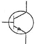
- NPN type transistor
- PNP type transistor
- Phoyto type transistor
- Diode type transistor
(정답률: 73%)
45. 일반적으로 회로도를 설계할 때 고려해야 할 사항으로 거리가 먼 것은?
- 대각선과 곡선은 가급적 피한다.
- 주 회로와 보조 회로가 있는 경우에는 주 회로를 중심으로 그린다.
- 수동 소자를 중심으로 그리고, 능동 소자는 회로의 외곽에 그린다.
- 신호의 흐름은 도면의 왼쪽에서 오른쪽으로, 위에서 아래로 그린다.
(정답률: 71%)
46. 전자회로설계에서 전체적인 동작이나 기능의 계통도로 그린 것은?
- 상세도
- 접속도
- 블록도
- 기초도
(정답률: 65%)
47. 인쇄회로기판의 설계 요소 중 패턴 설계 시 유의할 점으로 옳지 않은 것은?
- 패턴 사이의 간격은 차폐를 행한다.
- 일정 어스 방식으로 설계한다.
- 패턴은 가늘고 길게 한다.
- 배선은 짧게 한다.
(정답률: 77%)
48. 전자 회로도나 블록도(Block diagram)와 같이 기호(Symbol)와 글자로만 도면이 이루어질 경우, 수치의 의미가 없거나 도면과 실물의 치수가 비례하지 않을 때 척도 난의 표기로 옳은 것은?
- 실측
- NC
- NS
- 배척
(정답률: 71%)
49. 인쇄회로기판(PCB) 설계 시 고주파 부품 및 노이즈(noise)에 대한 대책으로 옳지 않은 것은?
- 아날로그, 디지털 혼재 회로에서 접지선은 분리한다.
- 전원용 라인필터는 연결부위에 가깝게 배치한다.
- 고주파 부품은 일반회로 부분과 분리하여 배치하도록 하고, 가능하면 차폐를 실시하여 영향을 최소화 하도록 한다.
- 부품의 리드는 가급적 길게 하여 안테나 역할을 하도록 한다.
(정답률: 66%)
50. 다음 콘덴서의 정전용량 값과 허용오차는?
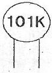
- 정전용량 : 0.001[㎌], 허용오차 : ±0.1[%]
- 정전용량 : 0.001[㎌], 허용오차 : ±1[%]
- 정전용량 : 0.0001[㎌], 허용오차 : ±10[%]
- 정전용량 : 0.0001[㎌], 허용오차 : ±20[%]
(정답률: 68%)
51. 인쇄회로기판 가공에 사용되는 용어 중 부품의 단자 또는 도체 상호간을 접속하기 위하여 구멍 주위에 만든 특정한 도체 부분을 무엇이라 하는가?
- 랜드(Land)
- 마운트(Mount)
- 패턴(Pattern)
- 홀(Hole)
(정답률: 66%)
52. 전자 CAD 패키지에 포함되어 있지 않은 프로그램은?
- 인쇄회로기판 설계용 프로그램
- 회로 시뮬레이션용 프로그램
- 회로설계(Schematic)용 프로그램
- 부품 가공 데이터 작성용 프로그램
(정답률: 62%)
53. 다음 중 PCB 설계 후 곧바로 PCB를 제작할 수 있는 필름 출력이 가능한 장치는?
- X-Y 플로티
- Photo 플로티
- Gerber Editor
- Ink jet 프린터
(정답률: 55%)
54. 사진이나 그림, 문서, 도표 등을 컴퓨터에 디지털화하여 입력하는 장치는?
- 터치스크린
- 스캐너
- 키보드
- 플로터
(정답률: 67%)
55. 다음 중 표면실장형 부품 패키지 형태가 아닌 것은?
- SMD
- DIP
- SOP
- TQFP
(정답률: 53%)
56. 수정 진동자를 나타내는 도 기호(symbols)는?
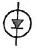
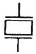
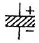
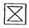
(정답률: 78%)
57. Through hole에 대한 설명으로 옳은 것은?
- 층간의 상호 절연을 위한 것이다.
- 홀의 한쪽이 층 내부에 묻혀 있다.
- 신호의 접지를 위한 홀이다.
- 부품면과 동박면을 도통하기 위한 것이다.
(정답률: 55%)
58. 다음 중 설계파일의 저장장치와 관련이 없는 것은?
- CD-RW
- 스캐너
- 하드디스크
- 플로피디스크
(정답률: 75%)
59. 다음 전자 소자 중 수동 소자는?
- 다이오드
- 트랜지스터
- 용량기
- 집적회로
(정답률: 60%)
60. 다음 프린터 종류 중 비 충격(non-impact) 프린터는?
- 활자 프린터
- 도트 프린터
- 펜 스트로크 프린터
- 레이저 빔 프린터
(정답률: 72%)